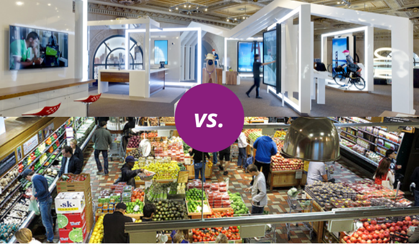
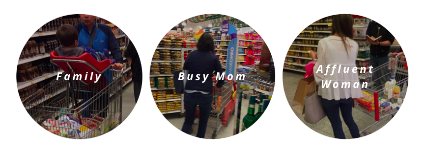
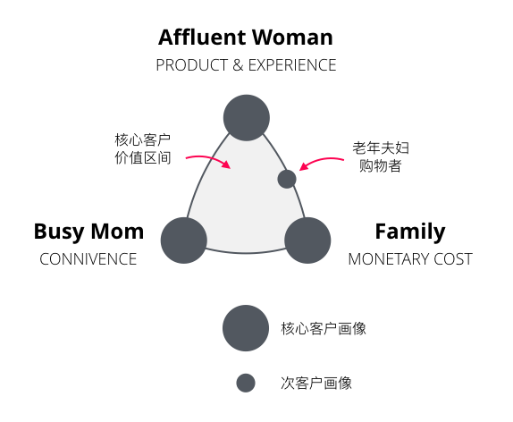
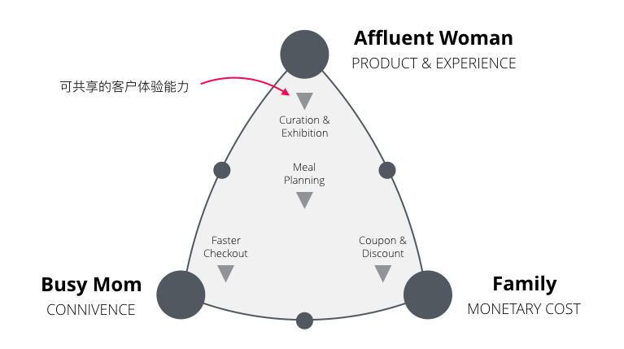
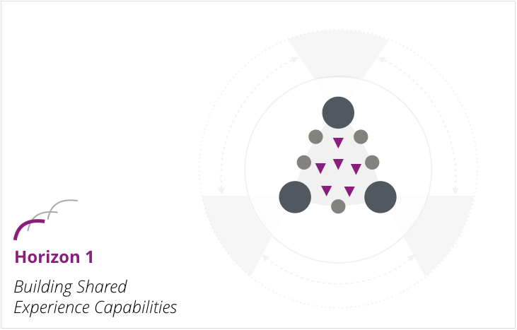
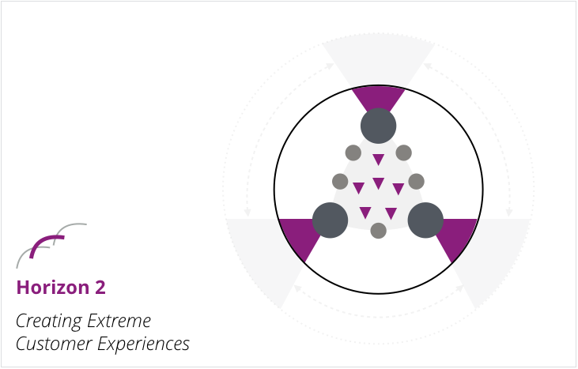
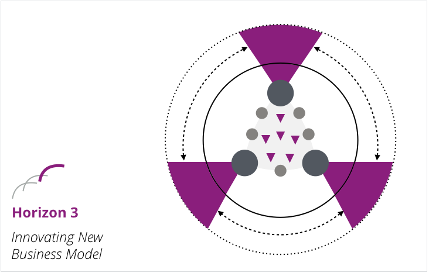
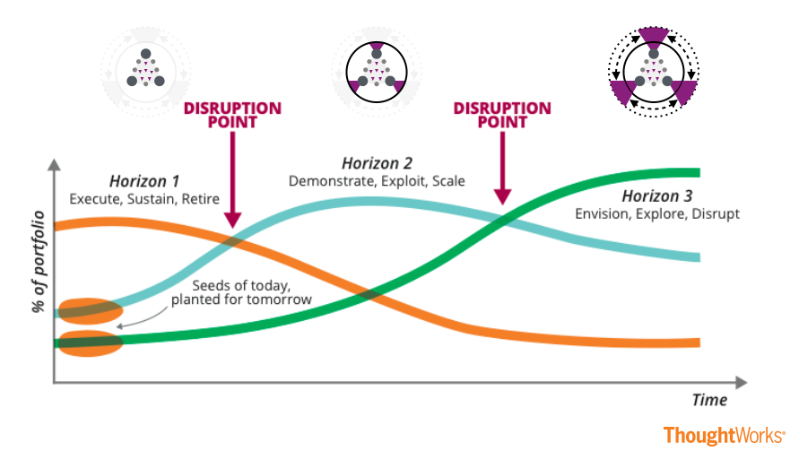

本文基于厄瓜多尔最大商超品牌客户体验规划项目实践完成。
客户画像与客户体验地图通常是客户体验规划的常用设计实践，但在真实规划项目中我们发现，对于某些复杂的客户体验上下文，如大型场超、综合体、零售百货等企业，客户画像多样、客户交互路径多变，应对这样的企业，我们应该采用全新的设计思路，构建复杂客户体验战略。
传统逻辑
让我们回到传统客户体验设计的核心思路，其要素点为：
- 建立上下文；
- 识别客户并建立客户画像；
- 甄选核心客户画像；
- 甄选核心客户的客户目标；
- 为核心客户目标建立客户体验地图；
- 识别痛点或机会并排列优先级；
- 选高优先级的痛点或机会进入设计迭代；
- 不断回溯前面步骤，直到所有核心客户画像覆盖完毕。
在这个思路下，设计改进改善了核心客户画像的多条体验流程，最终从整体上提升客户体验质量。
复杂场景的挑战
以上逻辑，对于某些有明确客户目标的企业或组织适用，例如银行、酒店、政府机构、学校，但对于诸如大型场超、综合体、零售百货等企业却有着明显的局限性，这些局限性体现在：
- 客户画像众多，且难以取舍；
- 客户的目标分散，且难以定义；
- 客户的行为模式多变且复杂；
- 强调沉浸式体验和触点体验胜于体验流程。
 电信运营商AT&RT和商超品牌Whole Food服务场景的区别
这些局限性决定了在设计和规划复杂客户体验时，需要一种全新的思路，强调多触点创新，而非线性的过程逻辑；强调所有顾客受益，而非唯一客户；强调持续性的体验提升，而非固定流程。
一个适应复杂客户体验场景的战略规划框架
在这里，根据项目实际经验，我提出一个有效的复杂客户体验规划方式。
明确商业战略
客户体验战略应与商业战略保持一致，这里的商业战略包含两个要素：
- 核心的客户价值愿景——我们希望我们的客户成为什么？
- 核心的价值定位——我们可以提供什么让客户的愿景实现？
在我们的实际例子中，这两个问题的答案是：
- 让厄瓜多人人民用更低的成本，享受更优质的生活；
- 用我们完善的供应链、最优质的产品选择、高效和标准化的服务、便利的地点、具有竞争力的价格完成这个愿景。
了解客户的价值分布
接下来，我们需要了解客户对于整个商业价值的贡献度，一个简单的模型是「单笔消费金额」对「每周光顾次数」，从近20个客户画像中，我们最终选取了三种类型的顾客作为企业最核心的利润贡献者，他们是：
- 进行家庭集体购物的顾客；
- 为家庭采购的职场妈妈；
- 富裕阶层的女性顾客。

这些核心客户群总共为企业贡献将近75%的利润，要么每周光顾超过三次，要么每次购买超过200美元。从调查中我们也发现，这些顾客有着极强的品牌忠诚度，也有相对稳定的购物习惯，同时也是各种创新的早期使用者。
选择最佳价值代言人
我们将这些核心高价值客户与企业的核心价值定位进行关联，找到谁可以作为这些核心价值定位的代言人。通过一系列的客户研究和调查我们发现：
- 家庭集体购物者关心家庭每月的支出，对折扣和价格优先关注；
- 为家庭采购的职场妈妈日程紧张，于是对便利性颇感兴趣；
- 富裕阶层的女性顾客有充分的时间也资金充沛，则对产品价值、店内体验更加重视。
这样，我们就为企业建立了一个核心的客户价值区间，三大价值由三大价值代言人代表。

同时其他客户类型（次客户）则分布在这个区间内，例如我们发现有大量的老年夫妇在固定时间内光顾，因时间充沛，其行为更倾向于家庭购买者和富裕阶层女性之间。
识别核心客户体验能力
在核心客户价值区间里，我们需要识别那些可共享的基础客户体验能力（Shared Capabilities），这些能力帮助企业交付最核心客户价值。它们有着以下特点：
- 倾向于某核心客户价值，如产品展示倾向于产品价值和店内体验、结账则倾向于便利性；
- 能力可以被多个客户画像共享；
- 各种能力之间可能相互关联，例如产品展示、折扣、结账、积分可能共同作用，完成一个完整的客户体验；
- 创新则是对核心客户体验能力的包装。

提升客户体验能力
三个地平线的成长模型（Three Horizons）同样适应客户体验的成长，首当其冲的则是受益于所有顾客的核心体验能力，其提升在于以下几个方面：
- 单点能力的提升，例如结账处的等待时间；价格显示的准确性；产品推荐的有效性等；
- 互相之间可整合的能力，例如产品展示、推荐、折扣、支付等的有机整合；
- 针对单类顾客的可定制性。
这些能力保护着客户的核心价值，是体验改进的核心基础。

规划极致体验
接下来，我们将关注核心高价值客户的极致体验，其目的在于：
- 进一步挖掘和提升核心高价值客户的购买能力；
- 吸引其他客户群在某些情况转化为核心高价值客户的购买行为；
- 从其他竞争对手处吸引更多核心高价值客户。
例如，我们为家庭集体购买的顾客提供了具有针对性的「孩童体验」，通过一系列的手段打造厄瓜多尔最优秀的家庭集体购买体验。

投资新商业模式
客户体验依然是商业的一部分，我们需要对未来进行投资，这便是第三条地平线——商业模式创新。
核心高价值客户对创新通常具有更高的接受度，也有更高意愿参与到企业的创新过程中，于是，我们将商业模式创新的重点放在他们身上。
例如，在调研中我们发现，由于厄瓜多尔缺少完整的工业体系，许多生活用品都有赖进口，这就形成了一些高价值、优品牌「舶来品」的稀缺性，许多富裕阶层的女性，热衷在自己的社交网络上转卖一些热销的商品，这也是她们购买力惊人的原因之一（每周每单超过200美元）。
南美国家缺少优质商品、完善的流通体系，这使得地下商品流通盛行，针对这一洞察，我们可以建立一个全新的商业模式，帮助这些购买者更好地转卖商品。

制定指导原则
三个客户体验成长地平线的建立，还需要指导原则（Guiding Principles）对投资优先级、方式、大小进行战略引导。这些原则可能包括：
- 我们需要优先投资哪个核心客户价值？
- 对基础体验能力的优先级在单点能力本身？还是组合能力？
- 对三大地平线投资的组合如何？
这些原则帮助我们更有战略性的进行客户体验投资管理，以获得稳定的投资回报，即更加满意的客户、更高的商业回报。
设计路线图
至此，我们有了商业战略上的宏观规划、客户价值的核心代表、三大地平线上的投资组合、客户体验管理的指导原则，这些都是核心客户体验路线图的基础。
基于这个路线图，我们可以进入到战术级的项目操作中，在三大地平线上有针对性的进行设计、实施、和演进，传统的客户体验设计方法开始有用武之地。
 与三大地平线战略紧密结合的客户体验投资策略
写在最后
传统客户体验设计项目中，MMP（最小市场化产品）的逻辑深入人心，我们：
- 关注最高优先级客户；
- 针对其最高优先级的客户目标；
- 解决达到这目标最高优先级的问题；
- 设计和实施最精简的解决方案。
然而对于某些成熟且复杂的商业模式，这种方式：
- 无法应对客户行为、形态、诉求的多样性；
- 难以持续成长且形成规模；
- 缺少战略级思考，并获得企业内部资源支持。
上述框架正是为了解决这些挑战，通过和商业战略紧密结合的方式，同时关注当前和未来进行投资组合，从规模的角度进行客户体验创新。当然，传统客户体验设计方式依然可以应用于某些场景中，例如商业模式的创新。